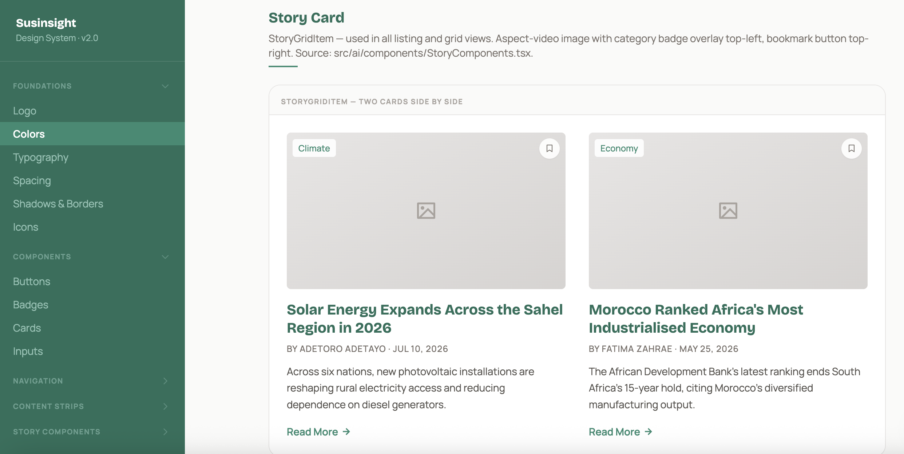
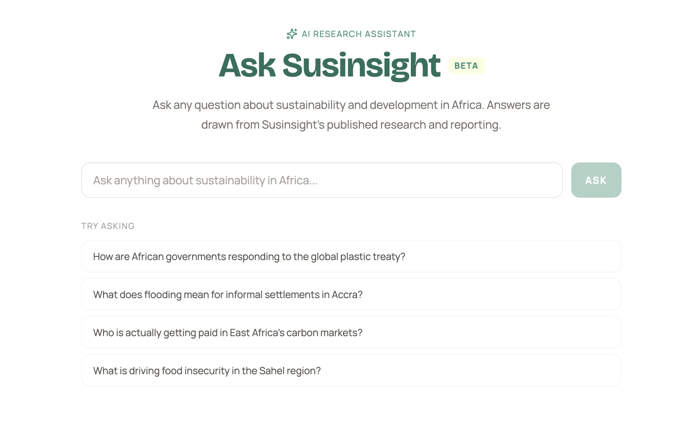
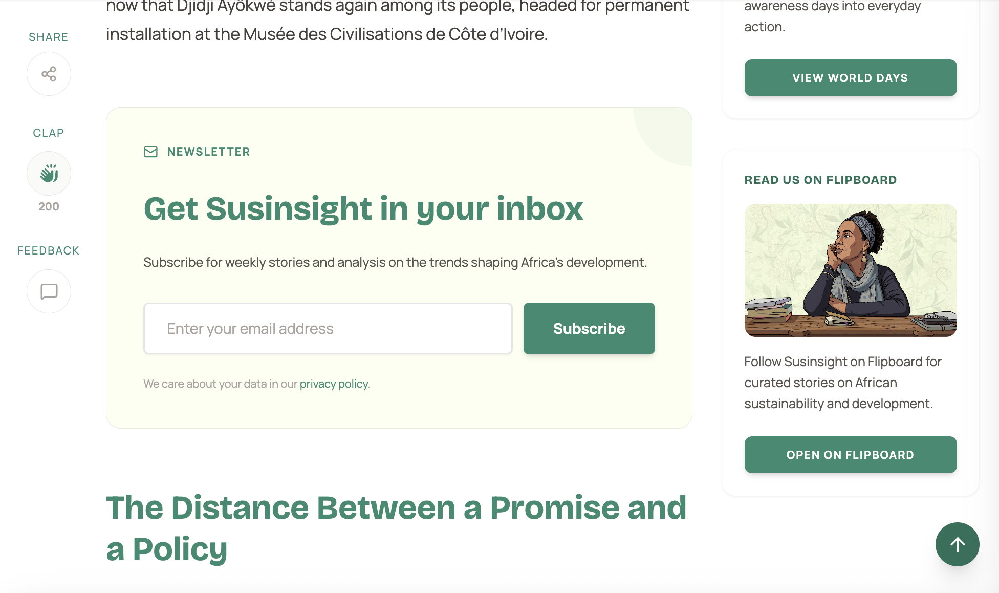

Susinsight
Advancing sustainability journalism across Africa through data-driven reporting, editorial strategy, and a high-performance digital insight platform.
- Period
- 2023 - present
- Role
- Creative & Platform Lead
- Focus
- Brand identity, headless Next.js, design systems, content operations
Moving from a restrictive CMS to an independent media infrastructure.
Sustainability reporting in Africa involves complex policy developments, climate finance data, renewable energy projects, and regional initiatives across 54 countries. The original WordPress implementation slowed down editorial iteration, made custom data visualizations difficult to maintain, and lacked the structural clarity needed for specialized policy journalism.
Rigid CMS Constraints
Traditional monolithic WordPress plugins created heavy page weights, slow load times on mobile networks, and restricted the editorial team from publishing interactive charts, structured glossaries, and custom research layouts.
Multi-Country Coverage
Stories required precise categorization across United Nations Sustainable Development Goals (SDGs), African economic regions, specific countries, and editorial series without complex manual database queries.
Diverse Reading Contexts
Audience members access stories from policy offices in Nairobi to remote research stations with variable bandwidth, demanding strict WCAG AA contrast standards, fast edge delivery, and alternative audio playback.
Visual Identity: Rooted in African Landscapes and Policy Rigor.
Susinsight needed an identity that felt authoritative alongside global research institutions while remaining rooted in the African continent. The system uses a high-contrast dual logo suite, an earth-and-vegetation color system, and balanced editorial typography.
Typography is paired intentionally: Bricolage Grotesque provides distinct character for headlines and section markers, while Manrope delivers crisp legibility for long-form reportage, data tables, and footnotes. Every color combination is verified against WCAG AA standards to guarantee readability across light and dark viewports.
Creative Direction: Infographics, Data Visuals, and Visual Storytelling.
Beyond code and layout, I lead the ongoing creative direction across digital publications, newsletters, and social channels. Every graphic translates dense sustainability reports into digestible visual intelligence.


Platform Architecture: Headless Next.js and Git-Backed Content Pipeline.
I migrated Susinsight from a monolithic WordPress setup to a headless Next.js architecture. Markdown files managed through Pages CMS serve as the primary content repository, giving the editorial team a git-based workflow with instant edge builds.

Pages CMS & Git Workflow
Writers author in structured Markdown with frontmatter schemas. Changes trigger automated build previews without database locking.
Sub-Second Static Delivery
Pre-rendered static HTML with incremental regeneration ensures sub-second page loads across African mobile data networks.
Zero Database Surface
Removing the MySQL backend eliminated security attack vectors, plugin vulnerabilities, and costly database maintenance.
Tokenized Design System & AI-Assisted Component Engineering.
To keep the platform cohesive as new features were added, I built a modular design system structured around a three-tier token architecture. This setup allowed AI coding assistants to generate new editorial blocks that automatically adhered to brand rules.
| Tier Level | Scope | Purpose | Example |
|---|---|---|---|
| Tier 1: Global | Raw foundational primitives | Fixed color hexes, spacing steps, font scale definitions | color-emerald-700 = #2E6F5B |
| Tier 2: Semantic | Contextual intent and theme rules | Surface backgrounds, text roles, border states, contrast modes | surface-brand-primary = {global.color.emerald.700} |
| Tier 3: Component | Element-level bindings | Card padding, button hover outlines, drawer margins | card-stat-border = {semantic.border.subtle} |

Specialized Editorial Features: AI Search, Glossary, and Audio.
Standard publishing templates fail to capture the depth of sustainability analysis. We developed custom features tailored specifically to researchers, students, and policy analysts navigating the platform.
Ask Susinsight (AI Assistant)
A semantic research assistant that indexes the entire publication archive, allowing readers to query complex climate topics and receive grounded answers with citations.
Sustainability Glossary
Plain-language explanations of technical terms like carbon crediting mechanisms, loss and damage frameworks, and mini-grid tariffs embedded directly within articles.
Audio Player with Speed Controls
Text-to-speech integration with adjustable playback speeds (0.75x to 1.5x) for readers commuting or reviewing articles on low-bandwidth connections.

Content Operations, Taxonomy & Continuous Growth.
Publishing sustainability journalism requires an editorial rhythm that connects newsletters, marketing channels, and country-level filtering without overhead.

Substack-connected inline newsletter cards embedded into reading flows at strategic scroll intervals.

Automated post-manifest builds dynamically index stories by SDG, country, and regional tags.
Ongoing Collaboration & Continuous Improvement
This engagement is an active, ongoing partnership. The platform is continuously refined based on reader engagement metrics, editorial feedback, and quarterly accessibility audits, ensuring Susinsight remains a high-clarity source for African sustainability reporting.